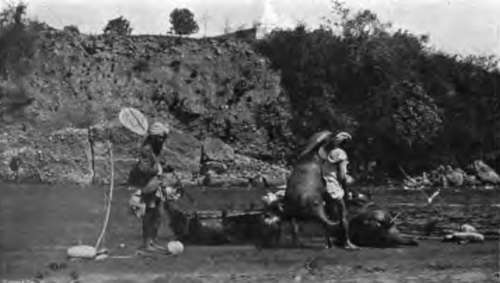
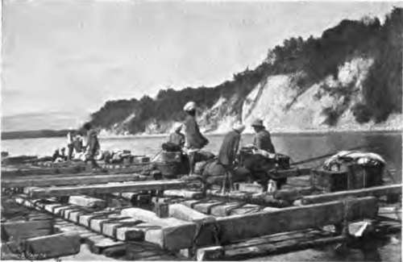
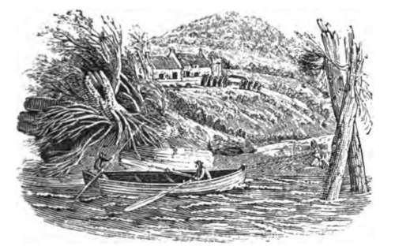

Mahseer Fishing. Continued
Description
This section is from the book "Fishing", by Horace G. Hutchinson. Also available from Amazon: Fishing.
Mahseer Fishing. Continued
The total catch was four fish over ten pounds each, and nine others averaging a little over four pounds each. We could not carry all home, so buried some and heaped a cairn of stones over them. We were up betimes next morning, and sent a coolie for the buried fish. I intended to walk over the hills to a lower part of the river on the chance of getting a sambhur, but some fishermen, old friends of mine, happened to be passing, and came to have a chat. They said there were some splendid pools lower down with heavy fish in them, but they could do nothing with their nets on account of snags. I said the snags would catch my line in the same way as their nets, but they said that it was not quite so bad as that, and that it was certainly worth my while trying. It sounded well, so I ordered the tents to be struck and camp pitched about ten miles lower down in an old mangoe grove. It may strike the reader as curious why I who fished the river every year did not know where the pools with snags, etc, were. The explanation is that the bed of the stream changed every year during the rains, hardly ever showing the pools the same two years running.
8. - A Surnai.
9. - Maseer Fishing In Northern India.
The shikarri,. coolie, and I, taking rods, tackle, and provisions with us, walked on ahead of the transport about five miles, and came across a splendid stretch of water with some grand pools. I got two fish, one over twenty pounds, the other ten, in the first hour, but only five others later on; all these were over ten pounds, but I lost two spoons and a minnow on snags. Rather a fine tusker elephant crossed quite close below us. We were down wind of him so sat still, and he took no notice of us. I could have shot him easily, but we do not shoot elephants in the North-West Provinces unless they are proclaimed rogues.
Next day I sent the tents and servants on to Raiwalla on the high banks above the Ganges, a beautiful spot, and in centre of the best fishing and shooting it is possible to desire.
My shikarri, self, and coolie went up the hills to walk along the ridges to Raiwalla on the chance of getting a shot at sambhur. We saw a few sambhur and many spotted deer, but not with good enough horns to make them worth shooting. Twice we gave our wind to sambhur in thick wood and heard them rushing off, but we could not see them. They must have been heavy beasts by the crashing they made rushing through the jungle. We heard a tiger speaking to himself-a peculiar sound between a muffled roar and a moan; it is a common habit they have when moving about alone, and it is impossible to say whether the sound comes from fifty yards or five hundred. We had no luck, and reached Raiwalla a little after dark, I found two old friends of mine waiting at the tent with their surnais. They said the river was in splendid order, so I told them to be all ready early in the morning. I was up in good time and went down to the river with rods, etc, and found the men all ready with the surnais. As few people understand what surnais are, I may explain. They are inflated cattle skins. How the people manage to get all the flesh and bones out at a small slit in the rear of the carcass it is impossible to say, but they do. The skins are then filled with a tanning mixture, and when quite cured the slits at the rear and the mouth are carefully sewn up, as also ten-inch lengths of three of the legs; the fourth is left open, and by it the skin is blown full of air and then tied up. A charpoy, small Indian bed, is tied on to one skin in front and to another skin behind. On this the fisherman sits, tailor-fashion. The two surnai men have surnais for themselves, on which they lie face downwards. They hold on to the bed with their hands, one in front and one behind the fisherman, and paddle with their feet. Naturally they cannot do much against the stream.
But to return to fishing: the surnais being all ready, I got on to the charpoy and laid out about thirty yards of line coiled between my legs. A Malloch reel would have been a great boon. The trace is a treble one, with three swivels and very heavy lead on it, and a phantom minnow rather more than eight inches long. All being ready, the men paddled out about ten yards. I at once cast out under-hand, and the heavy weight carried the line well out; at the same time the men paddled into shore and I wound up slowly. Three times I cast without luck, and at the fourth time, just after I had commenced to reel up, a fine fish came with a rush and was well hooked. For a few seconds he lashed about and then rushed down stream as hard as he could go. The surnai men, knowing their work, had paddled into the stream and were following as quickly as they could. The fish pulled hard for a long way down, and then at length I felt a slack line and told the men to paddle to the side. They did so, and I found on reeling up that I was below my fish; he had come to rest under a big sunken rock. I knew the rock well, but had forgotten about it at the moment. I wound up until I got a tight line on my friend and then put on a heavy strain. The stream was also pressing heavily on the line, and at last the fish came down with a small rush. It was clear that he was tired out. so I made the men follow a few yards above him, till he came to a little bay, into which I managed to turn the fish, and one of the surnai men getting outside of him shovelled him up on the shore. He was a good fish of twenty-two pounds.
We then had to walk up stream back to where we started, about three or four hundred yards. We commenced a little higher up than the place we first started from. I fished some distance down without seeing or feeling anything. At last, just as the men were paddling to the shore, my bait was violently seized under the water and my line was run out at a great pace. I had upwards of two hundred yards on, but at first it seemed as if it would be all too little. The surnai men paddled for all they were worth to try to prevent a break. The fish ran clean past the rock where the first fish rested, right on through the big pool, and then turned suddenly into a heavy backwater. The surnai was carried some way down before we could get to land. I at once set to work winding up. I don't think there were more than twenty yards of line left on the reel, and at last I got a strain on something, but it seemed a dead weight, and did not move in the least in any direction. I walked up with the back current, but could get no movement. I told the spare surnai man to fill his bag with stones and paddle out as I directed. I guided him to where I thought the end of my line would be, and told him to drop in the stones. At last I felt a movement. A dead weight seemed to be at the end of the line. It moved on with the backwater, so I thought it wiser to get on to the surnai again, in case the fish rushed down with the stream when the backwater met it. I made one of the men wade on the shore side and hold on to the charpoy. The fish was soon up at the end of the backwater and was whirled round towards the main stream. I held on like grim death, and at last got him into the backwater again. After that I soon landed him, for he was dead beat by the backwater. He was too heavy for the small weigher I had out, so we had to take him up to the hut tent. It was rather a long business, as the stream was very rapid, once we were out of the backwater, and carried us down a long way. Eventually we landed, and the men, leaving the surnai high up on the bank, carried the fish. He was a beauty-silver on the belly, gradually turning into gold, and lastly, to bronze on the back. His weight was forty-two and a half pounds.
A fish called the goonch, really a fresh-water shark, gives a good deal of trouble sometimes as he seizes your bait. If small, it matters not-you soon get them ashore-but if very heavy, it takes a long time to land them. They often weigh a hundred pounds, and have been caught over two hundred. They are useless for food, as the very lowest castes decline to eat them, and there can be no doubt in the minds of those who have had the luck to fish for them, that the mahseer are the king fish for the angler of all that live in Indian rivers.

Continue to:
- prev: Chapter IV. Mahseer Fishing
- Table of Contents
- next: Chapter V. Fishing-Rods And Tackle For Mahseer